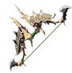

Arc Lezal en acier
Seuls les meilleurs archers lezalfos peuvent manier cet arc qui a ete renforce avec une grande quantite de metal, le rendant plus solide, mais aussi plus lourd.

Seuls les meilleurs archers lezalfos peuvent manier cet arc qui a ete renforce avec une grande quantite de metal, le rendant plus solide, mais aussi plus lourd.

utzirgtvutec
Cet arc en bois, ideal pour chasser du petit gibier, est peu efficace contre les monstres.
Les Gerudos se servent de cet arc habillement decore pour atteindre leurs cibles de loin quand elles chassent ou combattent dans le vaste desert.

Cet arc peu puissant dont les Zoras se servent principalement pour pecher a ete concu en metal et est plus robuste qu'il n'y parait.
Bonjour

Utilise en combinaison avec des fleches, ce petit arc leger, bien pratique en voyage, permet d'atteindre les ennemis a distance

Utilise en combinaison avec des fleches, ce petit arc leger, bien pratique en voyage, permet d'atteindre les ennemis a distance.
Les Sheikahs ont concu cet arc experimental selon d'anciennes technologies pour contrer le Grand Fleau. Sa puissance et sa vitesse de tir sont elevees, sa resistance reduite.
Cet arc de facture classique qu'utilisaient les chevaliers d'Hyrule donne a son archer une grande stabilite et le metal dans lequel il a ete forge le rend particulierement solide.
On dit que quand le Prodige Revali se battait dans les airs avec cet arc d'une grande rarete, il etait si rapide que personne ne pouvait rivaliser avec lui.

Zelda vous a confie cet arc avant le combat decisif contre Ganon. Seul le heros peut concentrer l'energie de la lumiere dans ses fleches afin abattre la creature malefique.